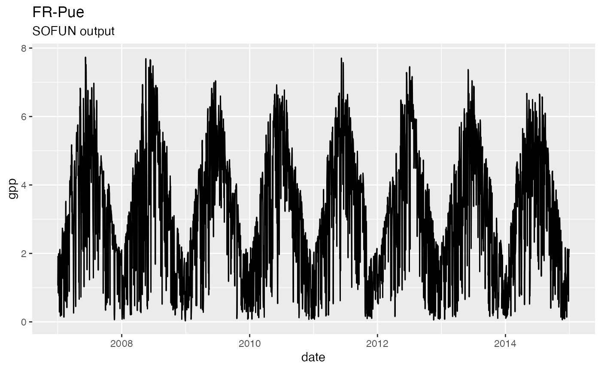
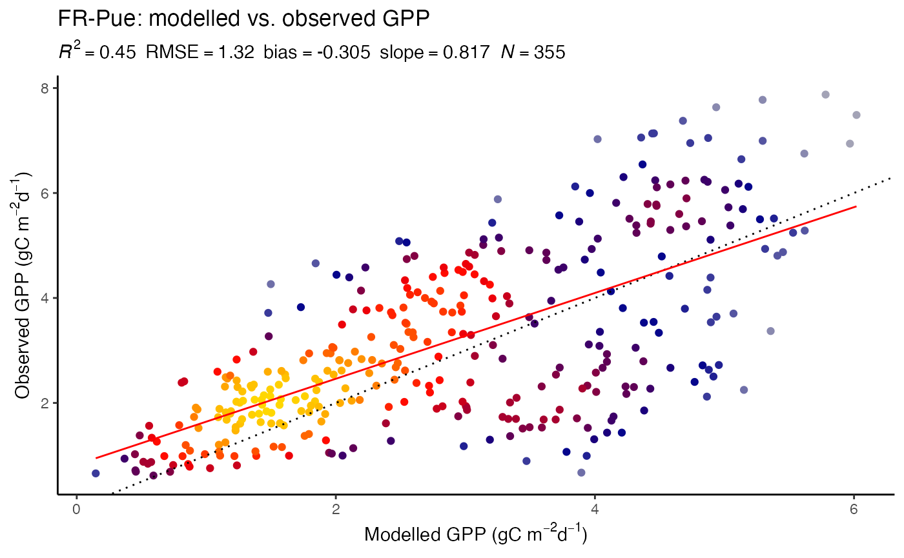

The following describes the use of rsofun for an ensemble of site-scale P-model simulations, including steps for model calibration and evaluation (benchmarking). rsofun is designed in a modular and hierarchical fashion. This enables multiple setups within the same modelling framework. The P-model implementation in rsofun is described in Stocker et al. (2020) Geosci. Mod. Dev..
In the P-model setup, the model requires time series of daily meteorological data as input and is calibrated against observational GPP data. This example describes simulations at a subset of FLUXNET 2015 Tier 1 sites, using GPP based on the night-time flux partitioning method as calibration target and benchmark (no worries, an out-of-sample calibration/evaluation function is available, too).
We manually define a subset of sites that are part of the FLUXNET 2015 Tier 1 set of sites:
mysites <- "FR-Pue"A small number of meta data variables have to be specified for each site specifically to define the simulation years. This information is also used for input, calibration, and evaluation data ingestion. Required meta information is specified for each site (in rows) and a number of variables:
lat for latitude (decimal degrees)lon for longitude (decimal degrees) - this is only used for data ingestion but not for the P-model simulation with rsofun.elv for elevation (m a.s.l.)year_start and year_end specifying years covered by the simulationwhc for the soil water holding capacitykoeppen_code to group sites for evaluation by Koeppen-Geiger climate zones.This information is provided by the data frame siteinfo_fluxnet2015 which is available as part of the ingestr package.
siteinfo <- ingestr::siteinfo_fluxnet2015 %>%
dplyr::filter(sitename %in% mysites) %>%
## take only year 2007 to 2014, corresponding to subset of data for site FR-Pue provided in this package as demo
dplyr::mutate(year_start = 2007, year_end = 2014) %>%
## add info
dplyr::mutate(date_start = lubridate::ymd(paste0(year_start, "-01-01"))) %>%
dplyr::mutate(date_end = lubridate::ymd(paste0(year_end, "-12-31")))Specify additional simulation parameters that are identical for all site-scale simulations.
params_siml <- list(
spinup = TRUE,
spinupyears = 10,
recycle = 1,
soilmstress = TRUE,
tempstress = TRUE,
calc_aet_fapar_vpd = FALSE,
in_ppfd = TRUE,
in_netrad = FALSE,
outdt = 1,
ltre = FALSE,
ltne = FALSE,
ltrd = FALSE,
ltnd = FALSE,
lgr3 = TRUE,
lgn3 = FALSE,
lgr4 = FALSE
)Run prepare_setup_sofun() to define the simulation settings that contain all the information specified by the two steps above (meta info, and simulation parameters), global simulation parameters are wrapped inside an additional column params_siml, added to the site meta info dataframe.
siteinfo <- prepare_setup_sofun(siteinfo = siteinfo, params_siml = params_siml)First, let’s do it by hand (calibration of parameters is shown later).
params_modl <- list(
kphio = 0.05,
soilm_par_a = 1.0,
soilm_par_b = 0.0,
vpdstress_par_a = 0.2,
vpdstress_par_b = 0.2,
vpdstress_par_m = 5
)For now, this is implemented as an illustration. Should be made site-specific. Values entered here take no effect.
Now, meteorological forcing data and fAPAR data for each time step have to be collected. These steps are described in the vignette vignettes/prepare_inputs_rsofun.Rmd for FLUXNET 2015 simulations. All forcing data, combined with model and simulations parameters are collected into one big nested data frame df_drivers, which stores all required information by rows for each site. An example of how this looks like is provided as part of the rsofun package.
df_drivers <- rsofun::df_drivers
df_drivers## # A tibble: 1 x 5
## sitename params_siml siteinfo df_soiltexture forcing
## <chr> <list> <list> <list> <list>
## 1 FR-Pue <tibble[,18] [1 … <tibble[,12] [1… <tibble[,5] [2 ×… <tibble[,10] [2…The units of fluxes have changed, but the object df_drivers has not been adjusted accordingly. Do it “by hand”.
df_drivers$forcing[[1]]$prec <- rsofun::df_drivers$forcing[[1]]$prec / (60*60*24)
df_drivers$forcing[[1]]$rain <- df_drivers$forcing[[1]]$prec
df_drivers$forcing[[1]]$snow <- 0.0
df_drivers$forcing[[1]]$ppfd <- rsofun::df_drivers$forcing[[1]]$ppfd / (60*60*24)Run the model for all the sites specified in the first step.
## run for a single site
mod <- run_pmodel_f_bysite(
df_drivers$sitename[1],
df_drivers$params_siml[[1]],
df_drivers$siteinfo[[1]],
df_drivers$forcing[[1]],
df_drivers$df_soiltexture[[1]],
params_modl = params_modl,
makecheck = TRUE
)## Warning in if (is.nanull(params_siml)) if (is.nanull(params_siml$spinup)) {: the
## condition has length > 1 and only the first element will be usedRun for the full set of sites
ptm <- proc.time()
df_output <- runread_pmodel_f(
df_drivers,
params_modl = params_modl,
makecheck = TRUE,
parallel = FALSE
)## Warning in if (is.nanull(params_siml)) if (is.nanull(params_siml$spinup)) {: the
## condition has length > 1 and only the first element will be used
print(ptm)## user system elapsed
## 3.196 0.242 3.650
# microbenchmark::microbenchmark(
# runread_pmodel_f(
# df_drivers,
# params_modl = params_modl,
# makecheck = TRUE,
# parallel = TRUE,
# ncores = 4
# ),
# runread_pmodel_f(
# df_drivers,
# params_modl = params_modl,
# makecheck = TRUE,
# parallel = FALSE
# ),
# times = 5,
# units = 's'
# )
ggplot() +
geom_line(data = df_output$data[[1]], aes(x=date, y=gpp), color = 'black') +
labs(title = df_output$sitename[[1]], subtitle = "SOFUN output")
Define calibration settings.
settings_calib <- list(
method = "gensa",
targetvars = c("gpp"),
timescale = list( gpp = "d" ),
maxit = 5, # (5 for gensa) (30 for optimr) #
sitenames = "FR-Pue",
metric = "rmse",
dir_results = "./",
name = "ORG",
par = list( kphio = list( lower=0.02, upper=0.07, init=0.0496 ) )
)Use the ingestr package once again, now for collecting calibration target data. I.e., GPP based on the nighttime flux decomposition method.
settings_ingestr_fluxnet <- list(
dir_hh = "~/data/FLUXNET-2015_Tier1/20191024/HH/",
getswc = FALSE,
filter_ntdt = TRUE,
threshold_GPP = 0.8,
remove_neg = FALSE
)
ddf_fluxnet_gpp <- ingestr::ingest(
siteinfo = dplyr::filter(siteinfo, sitename == "FR-Pue"),
source = "fluxnet",
getvars = list(gpp = "GPP_NT_VUT_REF",
gpp_unc = "GPP_NT_VUT_SE"),
dir = "~/data/FLUXNET-2015_Tier1/20191024/DD/",
settings = settings_ingestr_fluxnet,
timescale = "d"
)Calibrate the model.
set.seed(1982)
settings_calib <- calib_sofun(
df_drivers = dplyr::filter(df_drivers, sitename %in% settings_calib$sitenames), # use only one site
ddf_obs = ddf_fluxnet_gpp,
settings = settings_calib
)## kphio
## 0.04545092
## [1] "writing output from GenSA function to .//out_gensa_ORG.Rdata"
## [1] "writing calibrated parameters to .//params_opt_ORG.csv"The calibrated parameters are returned by calib_sofun() as part of the list:
print(settings_calib$par_opt)## kphio
## 0.04545092Update model parameters.
params_modl <- update_params(params_modl, settings_calib)Run the model again with updated parameters.
Run the model once again with these parameters and evaluate results.
params_modl$kphio <- settings_calib$par_opt["kphio"]
df_output <- runread_pmodel_f(
df_drivers,
params_modl = params_modl,
makecheck = TRUE,
parallel = FALSE
)Get evaluation data (benchmarking data).
## get data for idfferent time scales separately
settings_fluxnet <- list(
getswc = FALSE,
filter_ntdt = TRUE,
threshold_GPP = 0.8,
remove_neg = FALSE
)
ddf_eval <- ingestr::ingest(
siteinfo = siteinfo %>% dplyr::filter(sitename %in% mysites),
source = "fluxnet",
getvars = list(gpp = "GPP_NT_VUT_REF",
gpp_unc = "GPP_NT_VUT_SE"),
dir = paste0(path.package("ingestr"), "/extdata/"),
settings = settings_fluxnet,
timescale = "d"
)
mdf_eval <- ingestr::ingest(
siteinfo = siteinfo %>% dplyr::filter(sitename %in% mysites),
source = "fluxnet",
getvars = list(gpp = "GPP_NT_VUT_REF",
gpp_unc = "GPP_NT_VUT_SE"),
dir = paste0(path.package("ingestr"), "/extdata/"),
settings = settings_fluxnet,
timescale = "m"
)
adf_eval <- ingestr::ingest(
siteinfo = siteinfo %>% dplyr::filter(sitename %in% mysites),
source = "fluxnet",
getvars = list(gpp = "GPP_NT_VUT_REF",
gpp_unc = "GPP_NT_VUT_SE"),
dir = paste0(path.package("ingestr"), "/extdata/"),
settings = settings_fluxnet,
timescale = "y"
)Use rsofun to create a standardised object used for benchmarking the model output.
settings_eval <- list(
benchmark = list( gpp = c("fluxnet") ),
sitenames = mysites,
agg = 8 # An integer specifying the number of days used to define the width of bins for daily data aggregated to several days
)
obs_eval <- collect_obs_eval(
siteinfo = siteinfo %>% dplyr::filter(sitename %in% mysites),
settings = settings_eval,
adf = adf_eval,
mdf = mdf_eval,
ddf = ddf_eval
)obs_eval is now a list of data frames for different temporal resolutions. The data frames have rows for sites and time series for each site nested inside the column data.
df_output is the model output, also a data frame with rows for sites and time series for each site nested inside a column named data.
And finally do the evaluation.
out_eval <- eval_sofun(
df_output,
settings_eval,
settings_sims,
obs_eval = obs_eval,
overwrite = TRUE,
light = FALSE
)Print some results.
out_eval$gpp$fluxnet$metrics$xdaily_pooled## # A tibble: 1 x 5
## rsq rmse slope bias nvals
## <dbl> <dbl> <dbl> <dbl> <int>
## 1 0.448 1.32 0.817 -0.305 355Get the rbeni R package for nice plotting functions that can be used with the output of eval_sofun().
##
## Attaching package: 'rbeni'## The following objects are masked from 'package:LSD':
##
## colorpalette, complementarycolor, convertcolor, convertgrey,
## daltonize, disco, distinctcolors, heatpairs, heatscatter,
## heatscatterpoints## The following object is masked from 'package:ingestr':
##
## remove_outliers
gg <- out_eval$gpp$fluxnet$data$xdf %>%
analyse_modobs2("mod", "obs", type = "heat")
gg$gg +
labs(title = "FR-Pue: modelled vs. observed GPP",
x = expression(paste("Modelled GPP (gC m"^{-2}, "d"^{-1}, ")")),
y = expression(paste("Observed GPP (gC m"^{-2}, "d"^{-1}, ")")))## `geom_smooth()` using formula 'y ~ x'